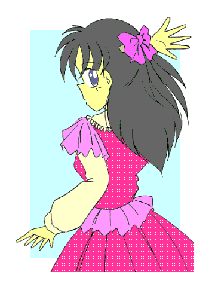

｢母さん……｣
｢どうしたの真奈美？｣
朝食の用意をしながら振り返った母さんに、俺は少しためらったものの、思い切って用件を言った。
｢じ、実はさ……最近……そ、その……サイズが……合わなくなって……｣
｢サイズが合わないって……何のサイズ？｣
｢……何のって、その…………ブ……ブ……｣
恥ずかしくて最後まで言えなかった俺だったが、その様子を見て母さんはすぐに分かったのだろう。
｢あらそうなの？ ……それは大変。すぐに計り直さなきゃ♪｣
そう言うと母さんはガスを止め、焼き上がった目玉焼きを素早く皿に乗せるが早いが、引出しからメジャーを取り出した。
そして、俺が着ていた女の子用のパジャマ（新学期早々、以前のパジャマが処分されて着せられてる奴だ……）を脱がしにかかる。
｢い、いいよっ。サイズなんか計らなくても、自分で選べるから……｣
俺は母さんからあわてて離れると、両腕で胸をかばった。だが母さんは、クスッと笑いながら言った。
｢サイズを計らずに選べる訳ないでしょう？ ……それとも店に行って、店員さんに計ってもらう？｣
｢…………わかったよ……｣
俺は仕方なくパジャマを脱ぎ、母さんの前に膨らみの増した胸をさらす。
｢ええっと、アンダーが……で、トップが…………確かに大きくなってるわね。まあ成長期だから当然かもね……｣
｢嫌だよ、これ以上女の子らしくなるなんて……早く元の身体に戻りたいよ｣
｢仕方ないわね。『使命』が終わる日まで我慢するしかないわ。……じゃあ今日中に新しいのを買っておくから、真奈美は早く着替えて朝食にしなさい。……ああ、ついでにお父さんも起こしてきてね｣
｢判った｣
パジャマを着直した俺は、セーラー服に着替えるために自分の部屋へと戻った。
このとき……いや、もっと以前に気づいておくべきだったのかもしれない。
俺の中で、｢変化｣が起こっていた事を……
変身美少女戦士ミラージュガール
第八話：驚きと戸惑いと怒りと喜び、そして……
作：ライターマン
俺の名前は三代武士（みしろ･たけし）。
もうすぐ１４歳になる、私立津留木（つるぎ）学園中等部二年の男子中学生……だった。
今の俺は、双子の妹の三代真奈美（みしろ・まなみ）としてセーラー服を着て学校に通っている。
男の俺がセーラー服（しかもスカートが結構短い）を着るなんて、すごく恥ずかしくて嫌だった。だけど現在の俺の身体は見かけ上、どこから見てもまるっきり――それも結構可愛い「女の子」なので……仕方のないことだった。
なぜ俺の身体が「女の子」になったのか？
それはある出来事により、俺に｢邪霊界からやってくる魔物と戦うための正義の美少女戦士ミラージュガール｣としての使命が与えられたからだ。
そもそもの始まりは、今の家に引越しする際、荷物の中から母さんの｢ブローチ｣を見つけたことだった。
母さんは２０年以上前にミラージュガールの一人、白き光の美少女戦士ミラージュホワイトだった。
だけど使命を終え、今ではただの記念品になった筈のブローチを手にしてキーワードを口にした瞬間、俺の身体は光に包まれ変化を始めた。
髪がサラサラになって長くなり、腰のあたりまで伸び……
肌が白くなり、指や腕、それに足がスラリと細くなり……
腰の部分が大きくなり、逆にウエストの部分が細く括れていって……
そして胸の部分が少しずつ膨らみ、やがて二つの丸い塊になり……俺の身体は白い光沢のある生地のコスチュームに包まれた！！
……そう、俺はミラージュホワイトとして登録――つまり｢レジスト｣されてしまったのだ！！
その後出会ったペルこと精霊界から来た妖精ペルティノの話では、母さんたちが閉じたこの世界と邪霊界をつなぐための｢扉｣が再び開いたとのことだった。
最初はペルが新しいミラージュガールを選ぶため、新しいブローチを精霊界から持って来る筈だった。だが邪霊界が先手を打って精霊界との間に結界を張ったために、ペル自身は何とか無事だったものの、ブローチの方は砕けてしまった。
そこで母さんたちが持っていたブローチを復活させることにしたのだが……正義感の強い女の子にしか作用しない筈のブローチが、なぜか俺に対して｢発動｣してしまったのだ！！
さらに以前のミラージュガールの｢息子｣たちが、俺と同様、新たなミラージュガールとして｢レジスト｣されていった。
転校した先のクラスメイトの古木祐一（ふるき･ゆういち）は青き水の美少女戦士ミラージュブルーに……
近くの公立中学に通う、女装が趣味の礼戸一明（れいと･かずあき）は赤き炎の美少女戦士ミラージュレッドへ……
こうして今、魔物から人々を守る美少女戦士……その正体は全員男！！ という、とんでもない事になっているのだ。
俺の場合はさらにとんでもない事になっている。
他の二人は変身を解けば元の男に戻るけど、俺は変身を解除してもしばらくは女の子のままなのだ。
なぜそうなのかは判らない。もともとどうして男の子がミラージュガールに変身できるのか？ ……それも判っていないのだ。
それでも夏休み前までは「女の子姿の持続時間」は１０時間ほどだったので、例えば夕方変身したとしても、翌朝になると男に戻って学校に通うことができた。
……だが、夏休みに入って状況は変わってしまった。
それまで倒してきた魔獣とは比べ物にならない強さの「魔人」に対抗するため、俺たちミラージュガールはパワーアップを敢行したのだが……強化したその力を使うと、俺が女の子でいる時間も
“パワーアップ” してしまったのだ（……）。
そう。それまでの１０時間が、一気に５日間へと……
当然、一度強化した力を使うと５日間は「三代武士」として過ごす事はできなくなり、その間にも魔人が現れるものだから、俺は男としての時間より「女の子」として生活するの時間の方が多くなった。
そこで止むを得ず、俺は二学期から「女の子」――三代真奈美として学校に通うことになったのだ。
……もちろん学校の中でこの事実は、古木、そしてときどき保健医として来校する古木の母親の美鈴さん以外誰も知らない。
そして、９月も残りわずかになった日の放課後……
ガラガラッ！！
｢み、美鈴さん……｣
｢……あら、真奈美ちゃんどうしたの？ 顔色がよくないわ。気分でも悪いの？｣
保健室の扉を開いて入ってきた俺を見た美鈴さんが、心配そうな顔をして近づいてきた。
｢え――ええ、今朝からちょっと…………でもそんな事で来たんじゃないんです｣｢……？｣
俺の言葉に首を傾げる美鈴さん。……俺はしばらく迷ったが、思い切って美鈴さんに言った。
｢ち……血が……出てるんです……｣
｢血？ 怪我したの？ ……どこが？｣
俺は顔を真っ赤にして、スカートの真ん中……股間の部分を指差した。
その様子に最初はきょとんとしていた美鈴さんだったが、何が起こったのか想像がついたのだろう。突然、驚愕に目を見開いた。
｢……！！ ……ま、まさかっ！？ …………本、当……なの？｣
｢判りません。……でも……多分……俺……俺……｣
俺の声はだんだんと震え、いつしか涙も出てきた。
そんな俺を美鈴さんはやさしく抱きしめ、そして保健室の奥の方へと連れて行ってくれた……
｢……だからこれは子供を産むための準備が整ったという証で、女性としては当たり前の、そして喜ぶべきことなのよ。だから安心して……って言っても無理よね……｣
そう言って美鈴さんはため息をつく。
美鈴さんは薬品を入れたロッカーから生理用ナプキンを取り出し、俺に必要な処置を施した後、俺に生理についての知識を教えてくれた。
以前、何かの本で大まかなことは知っているつもりだったが、誤っている部分が結構あったことを、俺はこの時に知った。
……とはいえ今回の事態の解決には、全然ならないのだが。
｢それにしても結構冷静ね。大声あげるとかして、もっとパニックになってもおかしくないのに……｣
｢……というかショックが大きすぎて、パニックになってる余裕なんてないですよ。トイレで始まったときは頭が真っ白になって……で、しばらくして美鈴さんが今日学校にくる日だったのを思い出して……でもそのままじゃトイレを出られなかったんでトイレットペーパーをかき集めて……｣
俺はポツリポツリと話しながら、美鈴さんが出したお茶に口をつけた。
こうしてる間も俺の頭の中は何かがぐるぐる回っていて、まともに考えることがあまりできなかった。
――オレハオンナニナッテシマッタ……
この事実はそう簡単に受け入れられるものじゃなかった。
｢……美鈴！！ さっき電話したのって本当なの！？｣
美鈴さんが俺の家に電話してからしばらくして、母さんが勢いよく保健室に入ってきた。後ろからついてきている猫はおそらくペルだろう。
｢真……武士、大丈夫？｣
母さんは俺のことを気づかって、男としての名前で俺に声をかけてくれた。
だけど俺は小さく首を横に振った。
｢もうしばらくしたら、大丈夫だと思うけど……｣
そんな俺を母さんは何も言わず、さっき美鈴さんがしたように、やさしく抱きしめてポンポンと背中を叩いてくれた。
おかげで俺は少し落ち着くことができた。
だがその時、最悪のタイミングで入ってきた人物がいた。
｢母さん、そろそろ帰る時間だけど何か手伝う……って、三代さん！？ どうしたの！？｣
母親と一緒に帰るために保健室に入ってきた古木は、俺の姿を見つけてびっくりしながら叫んだ。
俺はその声にビクッと身体を震わせ、思わず母さんに抱きついた。
｢……な、何でもない｣
｢何でもないって……そんな訳ないだろう！？ 一体何が？｣
なおもしつこく聞いてくる古木に……俺は思わず怒鳴ってしまった。
｢うるさいっ！！ 何でもないったら何でもないんだ！！ 気安く声なんかかけるなっ！！｣
自分の身を心配して声をかけてきてくれたのに、そんな言い方はないだろう……なんて考えは、このときの俺にはなかった。
知られたくなかったのだ。自分の身に起こったことを……
恥ずかしくもあったし、混乱がまだ続いていることもあった。お腹の下の方から来る痛みに少しイライラしていた事もあったかもしれない。
怒鳴られた古木は一瞬呆然とし、次に少し怒ったように顔を赤くして俺をにらみつけた。
｢命に別状はないから安心しなさい。祐一、今日は真奈美……じゃない武士君を病院で診察してから帰るから、あなたは先に一人で帰りなさい｣
美鈴さんにそういわれた古木は黙って頷くと、保健室の扉をピシャっと大きな音を立てて閉め、そのまま走り去ってしまった。
１時間後、美鈴さんが勤める病院の診察室。
｢診察の結果だけど……やはり生理ね｣
感情を抑えた声で、美鈴さんは俺たちに告げた。
それを聞いた母さんが美鈴さんに質問する。｢……どういうこと？ 以前診断したときは、『これ以上女性化が進行することはない』って言ってたじゃない？｣
｢あの時はね。……最初に出会った頃、そしてパワーアップした直後に診察したときは、武士君の外見上は女性体だったけど、内部の女性器官は未成熟で男性器官も体内に存在する、いわば
“中間体” だったのよ。恐らくすぐに元には戻らなくても、変身解除直後から男性へ復元するための変化は内部で行われていて、一定のレベルまで進むと一気に男の子に戻る。……そう考えていたわ｣
｢それが何故？｣
｢これは推測だけど……最近武士君はずっと女の子のままだったわよね。それも一ヵ月半以上｣
美鈴さんの言葉に、俺はコクリと頷く。
｢……恐らくは女の子の状態からの変身と、パワーアップした力の行使を続けた事によって身体が女の子としての状態に
“慣らされた” んじゃないかしら？ そして十分に発達した女性器官は、自らホルモンを分泌し始めて『女性』としてのリズムを刻み始めた……｣
｢元に戻る前に変身を続ける事により……って、何かラジコンのバッテリーでいうメモリー効果みたいな話ね｣
｢……俺の身体はニッカド電池か？｣
母さんの言葉につっこむ俺だったが、内容が内容だけに声に力が入らなかった。
｢……電池のたとえ話はともかく、超音波診断装置で武士君の身体の内部を調べてみたら、女性としての部分が年相応に発達してるのに比べて男性の部分が以前に比べて萎縮してるわ。このまま今までと同じように、女の子の状態での変身とパワーアップした力の行使を続けると……｣
｢……どうなるの？｣
｢最悪の場合、男性の部分が消滅して……武士君は男の子に戻れなくなるわ｣
｢ええっ！？｣
俺は思わず叫び声を上げた。確かにそれは最悪のシナリオである。
母さんも少なからず衝撃を受けたようだったが、それでも少しは冷静に美鈴さんに質問した。
｢それで……対策は？｣
｢とりあえずは変身しないことね。……さっきの電池の話に例えるなら、十分に放電を行なうことにより性能は復活するでしょ？ 同じようにしばらく男の子の状態を続けて、その後は女の子の状態で変身することを極力避ける。……こんなところかしら？｣
｢判ったわ。他にも方法がないかペルティノにも精霊界と連絡を取って調べてもらうわ｣
診察の後、病院を出て家へと向かった俺と母さんだったが、深刻な事態にお互い終始無言だった。
…………が、
｢か、母さん……これは……まさか？｣
テーブルに並べられた夕食を前に、呆然と立ち尽くす俺……
｢だって娘が大人の女性になったんだからお赤飯で祝うのは当然でしょう？｣
｢だあああっ！！ あんたは事態の深刻さをちゃんと考えているんかあぁぁぁっ！！｣
俺の怒りの叫びは家中に響き渡った。
２日後の昼休み。
｢真奈美ちゃんどうしたの？ 最近表情が暗いわよ……｣
昼食のお弁当を一緒に食べていた米倉さんは、俺の顔を覗き込んで心配そうに声をかけてきた。
｢まあ……ちょっとね｣
そう言って俺はため息をつく。
いわゆる｢あれ｣の痛みは３日目になってようやく収まってきた。母さんに言わせると｢結構軽い方｣らしいが、それでも｢自分は女なんだ｣という事実とともに、その痛みは俺の心を憂鬱した。
それに……
｢……やっぱり彼氏と喧嘩したの？｣
クラスの中でも噂好きの島野さんが、ニヤリと笑いながらそう言った。
その言葉に、俺の目が丸くなった。｢……彼氏ぃ！？｣
｢とぼけないで、古木君のことよ｣
｢ご、誤解だ……わ。お……あたしと古木……君とはそんな関係じゃ――｣
｢隠しても無駄よ。転校してきたときから二人とも仲良く話していたし、帰りが一緒の時もあったじゃない？ ……それが昨日から急によそよそしくなったから、何かあったな……とは思っていたのよ｣
ドキッ！！
俺の心臓が大きく脈打った。
そう、それも俺の気を重くしている原因の一つなのだ。
あの時、俺は心配して尋ねてきた古木に思わず怒鳴ってしまい、古木はそのまま帰ってしまった。
後になってそのことを反省した俺は、昨日から何度も謝ろうとしたのだが、当の古木は俺を避けるようになってしまったのだ。
（うーん、やっぱ結構傷つけたかもな。……よし、昼休みは周りの目もあるし、放課後にどこかに誘って、とにかく謝ろう）
などと考えていると、それまで黙っていた木下さんが遠慮がちに声をかけた。
｢……でもさあ、古木君って他に好きな女の子がいるかもしれないよ｣
｢ええっ！？｣
俺は思わず叫んでしまい、慌てて周囲をうかがってから、声をひそめてから尋ねた。
｢……それ、どういうこと？｣
｢本当にその子の事が好きかどうかは知らないけど……あたし見たの。昨日、古木君と知らない女の子が二人で歩いているのを――｣
放課後。
ホームルームが終わって学校を出た俺は、足音を立てないように歩くと、曲がり角の陰からそうっと向こうを覗いてみた。
教室で俺は古木に声をかけようとしたのだが、古木は逃げるようにして教室を出ると、自分の家とは違う方向に歩き出した。
それを見た俺は木下さんが言ってた話を思い出し、後をつけることにした。古木の奴は俺が尾行していることに気づかない様子で、どんどん先を進んでいく。
ニヤけているのかウキウキしているのか……その後姿から表情を窺い知ることはできないが、どうやら目的地が決まっているらしく、その歩調には迷いがない。
（こんな所で、どんな女の子と会おうとしてるんだ……？）
古木が角を曲がったのを見て、急ぎ足で歩きながら俺はそわそわしていた。
見てみたいような……やっぱり見たくないような……
俺の鼓動は少しずつ早くなっていった。
古木が住宅街の中のコンビニに近づいていくと、入り口近くに立っていた女の子が手を上げ微笑みながら古木に近づいていった。
チェック柄のスカートと紺色のカーディガンを可愛く着こなしたその女の子の姿を見て……俺は呆然となった。
その女の子は……礼戸だった。
（…………なあんだ）
俺はほっと胸をなで下ろした。
女装した礼戸はかなりの美少女に見えるから、偶然見かけた木下さんが「古木の彼女」だと勘違いしたのも無理はない。
もちろん礼戸自身は男に興味なんかない。奴にとって「女装」はあくまでも趣味（……と母親の弥生さんの店の手伝いのため）でしかなく、女の子になりたいと願ってる訳じゃないのだ。
俺は少し拍子抜けした気持ちを抱きながら、自分の家への道を歩き始めた。
（まったく人騒がせな話だよな。ま、勝手に心配した俺の方も悪いけど……って、何で古木に彼女がいるかも知れないってことを、俺が心配しなきゃならないんだ？）
俺は自分の考えていたことに気が付いて、思いっきり焦ってしまった。
（つまり俺は「嫉妬」していたというのか？ 恋人を取られたと思って……？ そ、それじゃ俺ってまるっきり女の子みたいじゃないか！？）
俺は急に鼓動が早くなり、顔が少し熱くなった。しばらく何度か深呼吸し、心を静めて何とか平静を保つことができた。
（そ……そうだよ、俺と古木は友達なんだ。友達のことを心配するのは別に不思議なことじゃないさ。それに会っていたのは礼戸だったんだし、古木が礼戸と会う用事と言ったら――）
そこまで考えた俺は一瞬呆然となって立ち止まり、思わず叫んだ。
｢しまった！！ 放課後に古木と礼戸が待ち合わせて行く用事なんて一つしかないじゃないか！！｣
俺は慌てて振り返ると、二人が歩いていった方向に向かって走り出した。
しばらくして俺は、森の中の小さな神社の入り口で二人の姿を見つけることができた。
二人は神社の横にある小さな道から、森の奥の方へと進んでいく。
背後から覗いているために二人の表情はよく判らないが、真剣に何かを探しているような雰囲気だった。
｢昨日は確かこの辺で見失ったのよねー｣
｢うん。あの時は暗かったし、時間もなかったから逃がしてしまったけど、今度はちゃんとやっつけないと……｣
女の子口調でしゃべる礼戸に古木が頷いた。やはり二人は魔物を探しているらしい。
俺は二人に声をかけた。｢……おい礼戸、それに古木｣
｢｢あっ！！｣｣
俺の言葉の二人は振り返り、そして驚きの声を上げた。
｢ど……どうしてここに？｣
｢それはこっちのセリフだ。どうして俺に何も言わなかった？｣
質問に答えず、逆に俺の方が二人を問いただした。古木に彼女がいるという噂を確かめるために、後をつけた――なんてとても言えない。
｢……だってお前、変身を止められているだろう？｣
古木の代わりに、男の子口調に戻った礼戸が俺の質問に答えた。
｢ど、どうしてそれを？｣
｢美鈴さんに聞いたんだよ。この前の検査でお前に異常が見つかって……それが治るまでの間に、変身までならともかく強化した『力』を使えば取り返しがつかないことになる――って｣
｢まあ……確かに｣
俺は二人から視線をそらし、つぶやくように答えた。
美鈴さんはどうやらはっきりとしたことを二人に伝えていないようだったが、古木も礼戸もそれで俺のことを心配してくれたらしい。
｢でも命にかかわることじゃないし、教えてくれるぐらい――｣
｢お前が知ったら黙って俺たちだけに行かせる訳ないだろ？ だから古木と話し合って、しばらくの間お前には何も教えないようにしようって決めたのさ。……バレちまったけどな｣
そう言って礼戸は肩をすくめた。｢……ま、知られてしまったものはしょうがないが、お前の身体が治るまでは俺たちが頑張るからさ、今日のところは帰ってくれないか？｣
少し優しげな表情で話し掛けてくる礼戸の言葉に、不承不承ではあったけど俺は頷いた。
そして俺は森を出るために道を引き返そうとした……が、
グルルルル……ッ！！
俺たちの周りを低い唸り声が響きわたった。
｢しまった！ 囲まれた……礼戸君、変身しよう！！｣
俺たちを囲むようにして現れた魔獣たちを見て、古木が叫ぶ。
｢お、俺も……｣
そう言って俺はポケットからブローチを取り出したが、礼戸に止められる。
｢やめろ！！ 今回は魔獣だけだから、俺たちだけでも大丈夫だ。危険を冒してもお前が変身する必要はない……って言っても持ってたら変身しそうだから、これは俺が預かっておく｣
そう言って礼戸は俺の手からブローチを取り上げると、古木の方を見て頷き合った。
｢｢ミラージュマジック ･
ミラクルチャージ！！｣｣
二人が変身のためのキーワードを唱えるとブローチが光り出し、続いて現れた青と赤の光の粒子にその身体は包まれた。
そして数秒後、光が収縮を始め、そこから現れた古木と礼戸の身体は先程とは一変していた。
少し長くなった髪、白く滑らかになった肌、スラリと細い脚や腕そして指、ウエストは細く、逆に胸と腰が膨らみ顔の輪郭も少し変化したその姿は、完全に少女のものになっていた。
そして光の粒子が二人の身体に集まると、光沢のある青と赤の生地で出来た服とミニスカート、手袋、ブーツ、ヘアバンドのコスチュームになり、ブローチが胸の中心に固定された。
｢アクアストーム！！｣
｢フレイムトルネード！！｣
二人の必殺技が俺の近くにいた二匹の魔獣を捕らえ、次の瞬間魔獣の姿は消え去った。
｢早く逃げて！！｣
ブルーの言葉にその場を走って離れた俺だったが……近くの繁みに潜り込み、戦いの様子を見守ることにした。
｢｢プラグイン！！｣｣
二人がパワーアップのためのキーワードを唱えると胸のブローチから光が飛び出し、その手の中で薙刀とバトンになった。
そしてブルーがバトンから伸びた水の鞭でを振るい、レッドが薙刀で斬りつけて魔獣たちを次々に倒していった。
（今回は大丈夫そうだな……）
二人の戦いの様子を見て、俺はホッと胸をなで下ろした。
魔獣も最初の頃に比べれば強くなっているものの、戦いに慣れ武器を手にした二人には敵わなかった。
だが……
｢現れたわね。今回は二人？ もう一人はどうしたのかしら？｣
残り３匹になった魔獣の背後から、魔人が姿をあらわした。
ブルーがすかさず鞭を魔人に向かって振るうが、魔人はそれを難なく避ける。
だがブルーの攻撃の間にレッドが薙刀で魔獣の一匹を切り伏せ、そのままの勢いで魔人に切りかかり……その左腕を傷つけた！！
｢グアァァァッ！！ お、おのれえぇぇっ！！｣
傷つけられた左腕から炎が上がり、怒り狂った魔人は残った右腕を振り回してレッドに襲いかかる！！
｢うわあっ！！｣
魔人の攻撃を受けたレッドは俺の近くにまで吹き飛ばされ、そしてレッドが持っていた俺のブローチが足元に転がってきた。
｢レッドっ！！ くっそう……｣
俺はブローチを手に変身のためのキーワードを唱えようとした。…………が
｢だめだっ！！」
俺に向かってブルーが叫ぶ。そして少し微笑みながら、
｢大丈夫、こいつは僕が倒すから｣
……と言った。
｢ホホホホホ、お前などに私がやられるものか！！｣
魔人は笑い声を上げながらブルーに迫ってくる。
そしてブルーは……なんとバトンから伸びた水の鞭を霧散させると、バトンの両端から氷状の物体を伸ばし弓を形成した。
まさか弓矢で魔人を射るつもりなのかっ！？
｢氷結・冷極……｣
｢そんなものに当たりはしないわ｣
ねらいをつけようとするブルーに対し、魔人はジグザグに走りながら近づいていく。そして間近にまで迫ると、右手の指から爪を伸ばし、ブルーの顔めがけて突き出した。
｢危ないっ！！ よけろおぉぉぉっ！！｣
思わず叫び声を上げる俺。だがブルーはよけなかった。
……いや、よけていた。ただし相手の攻撃を紙一重のところで……
そして弓を持った左手を魔人の胴体に密着させると、
｢破っ！！｣
ドンッ！！
ほぼゼロ距離で発射されたブルーの必殺の矢は魔人に命中し、魔人は吹き飛びながら悲鳴をあげる暇もなく氷漬けになり……そして砕け散った。
｢ブルーっ！！ しっかりしろっ！！｣
俺は倒れたブルーのもとに駆け寄ると、そう叫びながらブルーの身体を揺さぶった。
至近距離で放たれた矢による衝撃は、魔人と同時にブルーの身体をも吹き飛ばした。さすがに氷漬けになることはないのだが、吹き飛ばされたブルーは地面を２、３回転がり、そして倒れ伏したまま動かなかった。
俺がブルーの身体を揺さぶり続けていると、その目がうっすらと開いた。
｢あ……魔人は？｣
｢倒されたよ……お前の攻撃でな｣
｢そう……よかった｣
｢よくないっ！！ どうしてあんな無茶をしたんだ！？｣
問い詰める俺の声には明らかに怒気が含まれていた。魔人の攻撃がブルーの身体をかすめたとき、そして必殺の一撃の余波で吹き飛ぶブルーを見たとき……俺は自分の心臓が止まる位の衝撃を受けた。怒りを覚えるのも当然だろう。
だがブルーは少し笑うと俺に言った。
｢だって……あそこで魔人を倒さないと……三代君は変身して『剣』を使うだろう？ ……そうしたら取り返しがつかなくなるかもしれない……だから……どうしても倒したかったんだ｣
｢俺の……ために？｣
こくんと頷くブルー。次の瞬間、俺はブルーに抱きついた。
｢ありがとう。でも約束してくれ……もうこんな無茶は二度としないって｣
｢うん……約束する｣
そう言って右手で俺の頭をなでるブルー。その手の感じが俺にはすごく心地よかった。
翌朝。
目が覚めた俺は、すごく気分がよかった。
ここ数日俺を悩ませていた｢あれ｣の痛みもすっかりなくなり、前の日にはギクシャクしていた古木とも仲直りができた。
昨日、古木は家に帰るために分かれようとした俺を呼び止めると、小さな箱を渡してきた。
きれいに包装された箱に、｢HappyBirthday｣と書かれているのを見て、俺は気がついた。
その日が俺の１４歳の誕生日だったのを……
俺は涙が止まらなかった。もちろん悲しくて泣いている訳ではない。
古木は頭を掻きながら、
｢他にいい物が思いつかなくて……もしかしたら怒るかも｣
などと言っていたが、俺は首を横に振って箱を受け取ると、古木に礼を言って別れた。
ベッドから起き上がった俺は、古木から渡された箱を開けてみた。
｢ええっと……これは髪飾りか？｣
それは確かバレッタと呼ばれているものだった。高そうではないが、リボンがきれいに飾られたそれを見て、俺は思わず笑ってしまった。
｢まったく女の子のアクセサリーを贈るなんて……ま、いっか。今日は土曜日だし、こいつを着けて古木の所へ行ってみるかな？｣
そうつぶやきながら、俺はパジャマを脱ぐとタンスから服を取り出した。

（つづく）
おことわり
この物語はフィクションです。劇中に出てくる人物、団体は全て架空の物で実在の物とは何の関係もありません。
あとがき
どうも、ライターマンです。
ミラージュガール第八話、いかがだったでしょうか？
しかし終わってみれば、主人公は変身してない。これでよかったのかな？
まあ、それはともかく、武士君にもとうとう｢あの日｣が来てしまいました。
そして続いて襲いかかる新たな試練（？）。武士君の運命は？ そして魔物たちとの戦いの決着は？
次回いよいよミラージュガール（本編）最終話！！ 乞うご期待……してね。お願いだから。
それではまた。
□ 感想はこちらに □